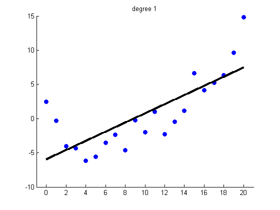
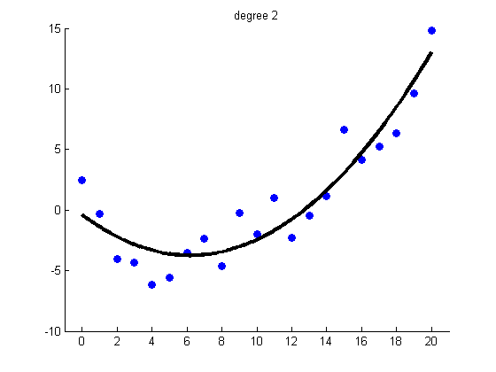

Linear Regression with Polynomial Expansion
[xtrain, ytrain, xtest, ytestNoisefree, ytest] = polyDataMake('sampling','thibaux'); degs = 1:2; for i=1:length(degs) deg = degs(i); lambda = 1e-8; model = linregFit(polyBasis(xtrain, deg), ytrain, 'lambda', lambda); ypredTest = linregPredict(model, polyBasis(xtest, deg)); figure; scatter(xtrain,ytrain,'b','filled'); hold on; plot(xtest, ypredTest, 'k', 'linewidth', 3); hold off title(sprintf('degree %d', deg)) set(gca,'xlim',[-1 21]); end 